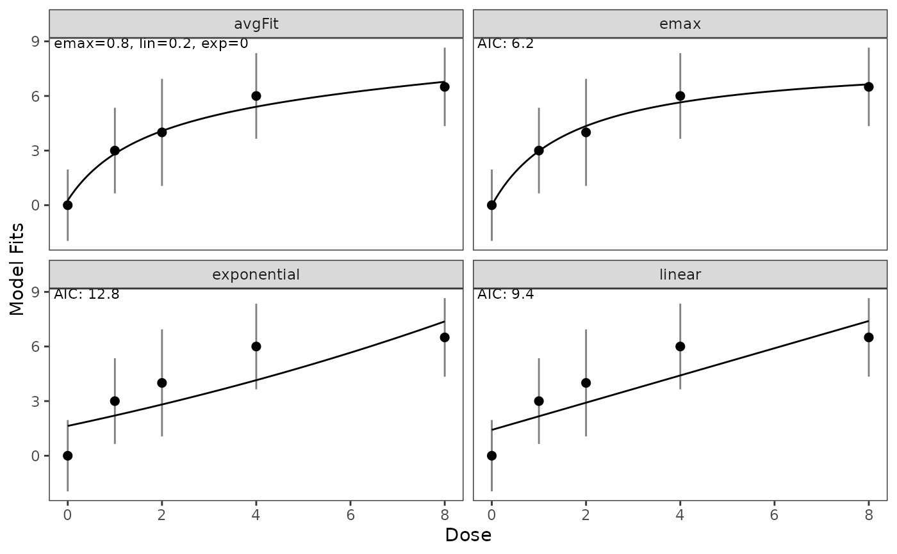

Plot function based on the ggplot2 package. Providing visualizations for each model and a average Fit. Black lines show the fitted dose response models and an AIC based average model. Dots indicate the posterior median and vertical lines show corresponding credible intervals (i.e. the variability of the posterior distribution of the respective dose group). To assess the uncertainty of the model fit one can in addition visualize credible bands (default coloring as orange shaded areas). The calculation of these bands is performed via the getBootstrapQuantiles() function. The default setting is that these credible bands are not calculated.
Arguments
- x
An object of type modelFits
- gAIC
Logical value indicating whether gAIC values are shown in the plot. Default TRUE
- cr_intv
Logical value indicating whether credible intervals are included in the plot. Default TRUE
- alpha_CrI
Numerical value of the width of the credible intervals. Default is set to 0.05 (i.e 95% CI are shown).
- cr_bands
Logical value indicating whether bootstrapped based credible bands are shown in the plot. Default FALSE
- alpha_CrB
Numerical vector of the width of the credible bands. Default is set to 0.05 and 0.5 (i.e 95% CB and 50% CB are shown).
- n_bs_smpl
Number of bootstrap samples being used. Default 1000.
- acc_color
Color of the credible bands. Default "orange".
- plot_res
Number of plotted doses within the range of the dose levels, i.e., the resolution of the plot. Default 100.
- ...
optional parameter to be passed to plot().
Examples
posterior_list <- list(Ctrl = RBesT::mixnorm(comp1 = c(w = 1, m = 0, s = 1), sigma = 2),
DG_1 = RBesT::mixnorm(comp1 = c(w = 1, m = 3, s = 1.2), sigma = 2),
DG_2 = RBesT::mixnorm(comp1 = c(w = 1, m = 4, s = 1.5), sigma = 2) ,
DG_3 = RBesT::mixnorm(comp1 = c(w = 1, m = 6, s = 1.2), sigma = 2) ,
DG_4 = RBesT::mixnorm(comp1 = c(w = 1, m = 6.5, s = 1.1), sigma = 2))
models <- c("exponential", "linear")
dose_levels <- c(0, 1, 2, 4, 8)
fit <- getModelFits(models = models,
posterior = posterior_list,
dose_levels = dose_levels,
simple = TRUE)
plot(fit)
